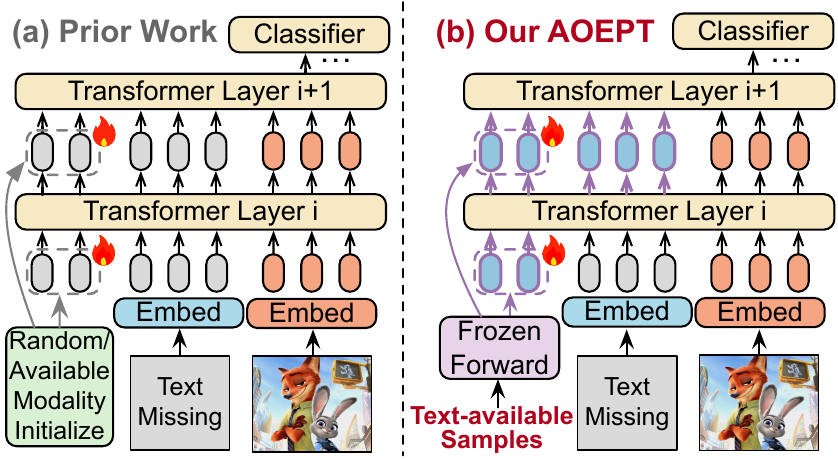
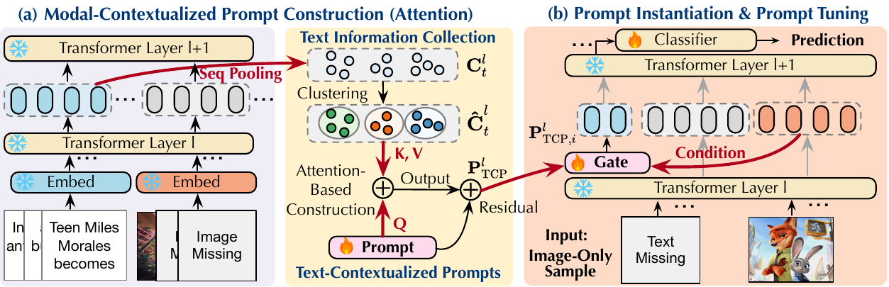
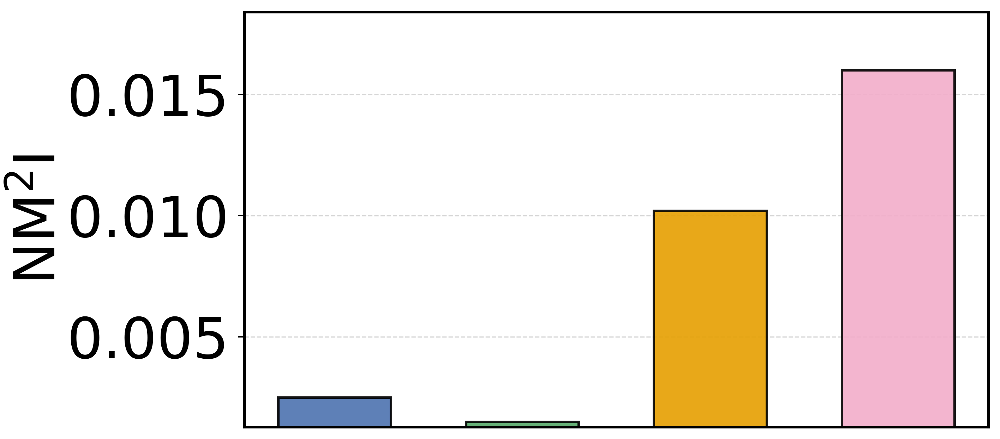
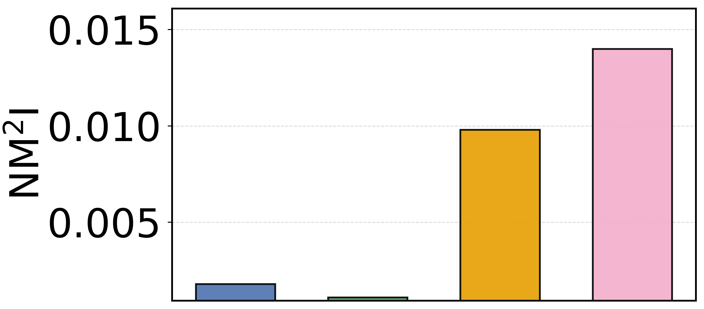
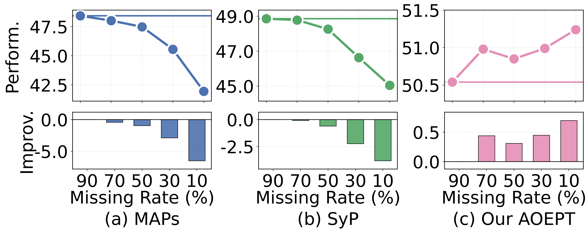
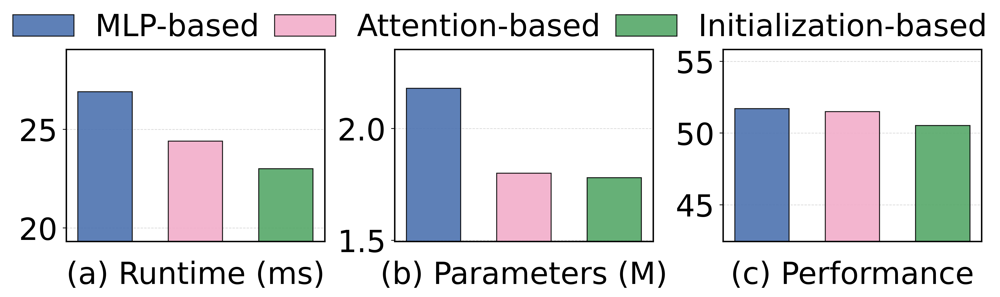
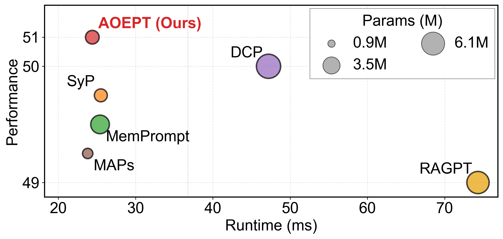

AOEPT: Breaking the Implicit Modality-Reduction Bottleneck in Modality-Missing Prompt Tuning
University of Electronic Science and Technology of China
ICML 2026
IMR Bottleneck
Existing modality-missing prompt-tuning methods adapt Multimodal Transformers to degraded inputs, but their prompts are still conditioned only on observed modalities. This confines the model to a modality-reduced reasoning space. AOEPT identifies this Implicit Modality-Reduction (IMR) bottleneck and breaks it by injecting modal-contextualized prompts that serve as lightweight repositories of missing-modality information.

Method: AOEPT
AOEPT builds modality-level prompt repositories from training data, activates them with the observed modality of each incomplete sample, and inserts the resulting prompts into the transformer to supplement missing-modality evidence.

Modality collection
MCP construction
Instance-aware prompt instantiation
NM2I Analysis
We introduce Normalized Missing-modality Mutual Information (NM2I) to diagnose the severity of the IMR bottleneck by measuring whether prompts actually contain information about the missing modality. This complements accuracy: a method can improve prediction while still failing to restore missing-modality evidence.
Empirical joint distribution
Mutual information
NM2I


Prior prompting baselines remain near zero in NM2I, while AOEPT shows stronger missing-modality information in the prompt tokens.
Main Results
AOEPT consistently improves over strong prompt-tuning baselines across datasets, missing types, and missing rates. The table reports average performance over text-missing, image-missing, and both-missing scenarios.
| Missing Rate | Method | MM-IMDb F1-M | HateMemes AUC | Food101 ACC |
|---|---|---|---|---|
| 70% | LB | 49.36 | 62.54 | 79.26 |
| 70% | MAPs | 50.36 | 63.13 | 80.43 |
| 70% | DCP | 51.15 | 64.34 | 82.69 |
| 70% | RAGPT | 50.17 | 66.24 | 82.58 |
| 70% | MemPrompt | 50.93 | 64.73 | 83.06 |
| 70% | SyP | 51.88 | 68.11 | 83.56 |
| 70% | AOEPT | 53.22 | 69.63 | 84.29 |
| 90% | LB | 46.99 | 66.29 | 73.82 |
| 90% | MAPs | 48.56 | 60.69 | 77.29 |
| 90% | DCP | 49.47 | 64.24 | 80.30 |
| 90% | RAGPT | 49.47 | 66.02 | 80.82 |
| 90% | MemPrompt | 49.42 | 63.78 | 79.06 |
| 90% | SyP | 49.58 | 67.72 | 81.26 |
| 90% | AOEPT | 51.45 | 68.57 | 82.06 |
Further Analysis
Modality Information Scaling
AOEPT benefits from richer training-time access to the modality that is missing at test time, while prior methods tend to plateau or degrade.

Prompt Construction
The attention-based construction balances performance, runtime, and parameter cost among the tested MCP variants.

Efficiency
AOEPT keeps the prompt design lightweight while improving robustness under missing modalities.

BibTeX
@inproceedings{lang2026aoept,
author = {Lang, Jian and Hong, Rongpei and Zhong, Ting and Zhou, Fan},
title = {AOEPT: Breaking the Implicit Modality-Reduction Bottleneck in Modality-Missing Prompt Tuning},
booktitle = {International Conference on Machine Learning (ICML)},
year = {2026}
}